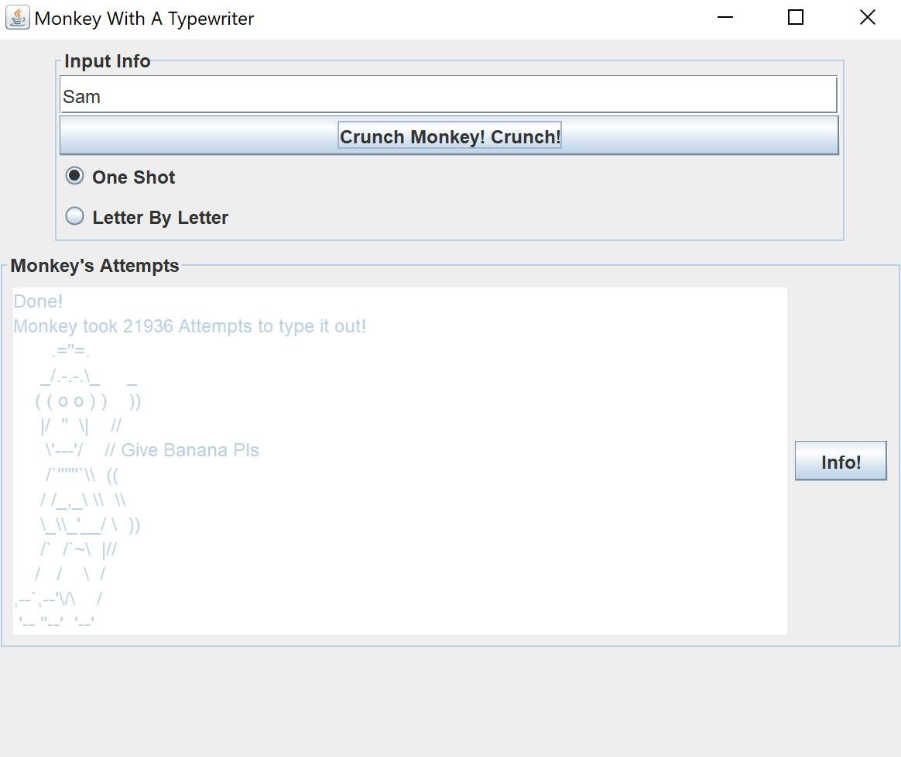
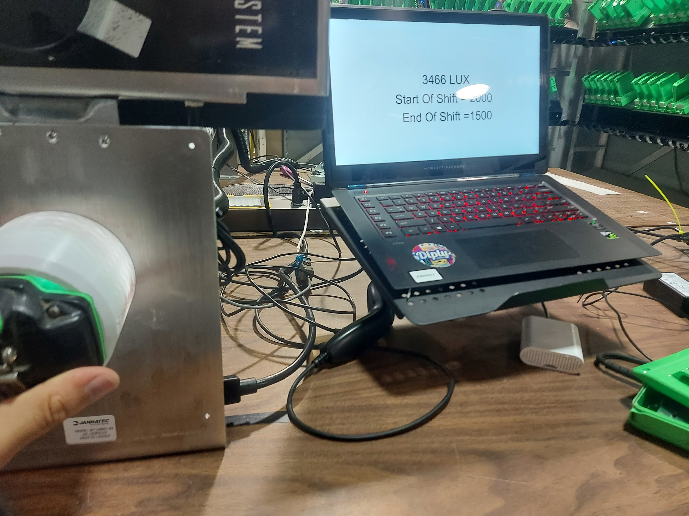
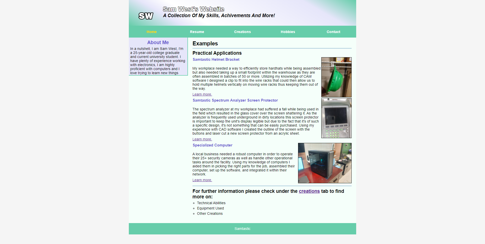

Ma Passion pour la Programmation
J'ai commencé à programmer dès l'université, où j'ai appris les bases de différents langages et outils. Depuis, ma passion n'a cessé de grandir, et j'ai eu l'opportunité de travailler sur des projets variés. Je me sens à l'aise avec plusieurs langages de programmation, notamment Java, C#, C++, Python et Arduino. Ces outils m'ont permis de réaliser des projets allant de simples jeux à des applications techniques.

Ce code est basé sur le théorème du singe infini, qui stipule essentiellement qu'un singe ayant un temps infini avec une machine à écrire écrirait les meilleures œuvres de Shakespeare. Ce code prend n'importe quel texte tapé et essaie continuellement des touches aléatoires jusqu'à ce qu'il corresponde.
Space ship goes pew est un simple jeu twin-sticks que j'ai codé et pour lequel j'ai créé les éléments graphiques.

Un luxmètre basé sur Arduino avec un affichage visuel pour l'utilisateur final qui affiche le lux actuel ainsi que la valeur attendue.

C'est évident, mais je tiens à le mentionner, ce site web a également été créé par moi.